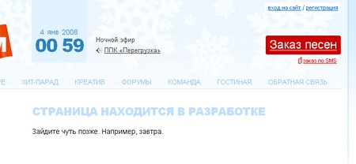
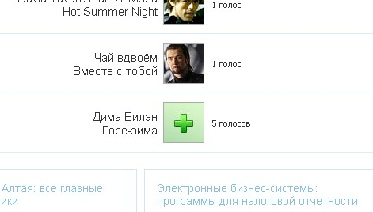

Когда наши иногородние партнеры спрашивают у нас, какие интернет-ресурсы мы можем порекомендовать кроме нашего собственного, я всегда особо не задумываясь отвечал - конечно же сайт радио «Кузбасс FM».
Хорошая контентная база плюс достаточно высокий профессионализм разработчика - Алексея Доронгова и кемеровчане имеют возможность не просто почитать новости области в онлайне, но и сделать это в дружелюбной, радующей глаз атмосфере.
Но плох тот разработчик, который считает созданный продукт совершенством.
И вот по прошествии почти пяти лет одновременно со сменой частоты обновился и сайт радио «Кузбасс FM».
Верстка сайта перестала быть «резиновой».
Главная страница разбита симпатичным баннером на ширину страницы
Более заметной на сайте стала регистрация.
Заложен и неработающий пока функционал по напоминанию забытого пароля и заказу песен по SMS 
В целом очень приятное впечатление, несмотря на отстутствующую в чарте фотографию Димы Билана 